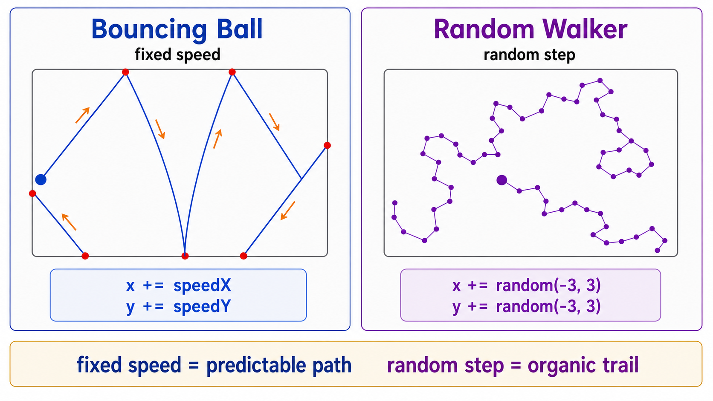
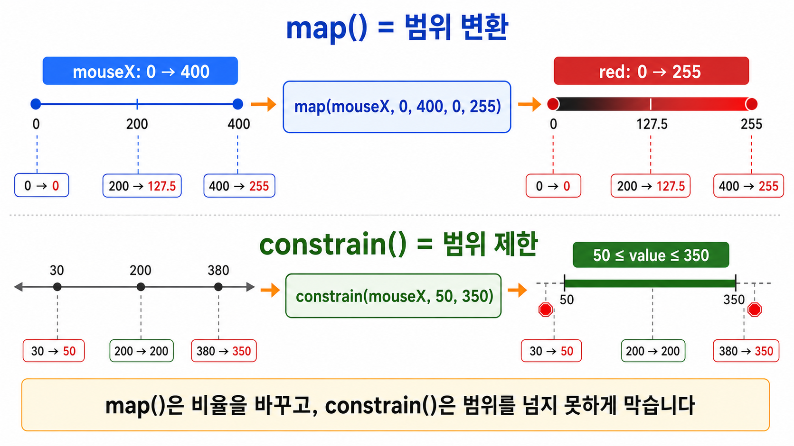
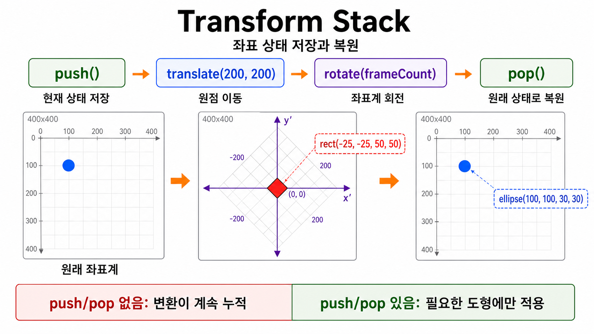

5주차 2교시 — random, 유틸리티 함수, 좌표 변환
강의 아웃라인: week-05-outline 이전 교시: week-05-period1-student (애니메이션 원리와 변수로 움직이기) 다음 교시: week-05-period3-student (학생 주도 실습: 인터랙티브 애니메이션)
| 항목 | 내용 |
|---|---|
| 대상 | P5.js 입문자 (테크아트 전공) |
| 소요 시간 | 50분 (45분 + 버퍼 5분) |
| 사전 준비 | 1교시 변수 움직임·화면 경계 처리 |
-
random()을 활용해 예측 불가능한 움직임과 효과를 만들 수 있습니다 -
map()과constrain()유틸리티 함수를 활용할 수 있습니다 - 좌표
변환(
translate()·rotate()·push()/pop())으로 회전 애니메이션을 구현할 수 있습니다
1교시 복습
1교시에서 배운 것을 짚고 갑니다.
- 도형을 움직이려면
let x = 0;을draw()밖에 선언합니다.draw()안에 쓰면 매 프레임 초기화돼서 안 움직입니다. - 화면 벽에 부딪히면 튕기게 하려면
if (x > width) { speed *= -1; }— 속도의 부호를 뒤집습니다. - 바운싱 볼에 마우스 클릭으로 방향을 바꾸려면
mousePressed()안에서speed *= -1;.
1교시에서 일정한 움직임을 구현했습니다. 2교시에서는 다양하고 풍부한 움직임 — 예측 불가능한 랜덤 움직임, 값을 변환하는 유틸리티 함수, 좌표를 회전시키는 변환까지 배웁니다.
심화 개념 1 — random() 함수
4주차 mousePressed()에서 random(255)로 랜덤
색상을 잠깐 써봤습니다. 이번에는 random()을 조금 더 정확히
배웁니다.
기본 문법
| 형태 | 의미 | 예시 | 결과 범위 |
|---|---|---|---|
random(max) |
0 이상 max 미만 | random(255) |
0 ~ 254.99… |
random(min, max) |
min 이상 max 미만 | random(100, 300) |
100 ~ 299.99… |
random()은 호출할 때마다 다른 숫자를 냅니다. 주사위처럼
매번 결과가 달라집니다. 기본 결과는 정수가 아니라 소수점이 있는
숫자입니다. 정수가 필요하면 int(random(10))처럼
int()로 감싸면 됩니다. int()는 소수점을
잘라줍니다 (int(7.82) → 7).
활용 1: 랜덤 위치에 도형 생성
function setup() {
createCanvas(400, 400);
}
function draw() {
// background() 없음 → 누적!
fill(100, 150, 255, 100);
noStroke();
ellipse(random(width), random(height), 30, 30);
}매 프레임 random(width)로 x좌표,
random(height)로 y좌표를 정하니 매번 다른 위치에 원이
나타납니다.
활용 2: 랜덤 색상
function setup() {
createCanvas(400, 400);
colorMode(HSB, 360, 100, 100);
}
function draw() {
background(0, 0, 10);
noStroke();
for (let i = 0; i < 20; i++) {
fill(random(360), 80, 100); // 색상만 랜덤, 채도/밝기 고정
ellipse(random(width), random(height), 20, 20);
}
}3주차 HSB 모드입니다. random(360) — 색상(hue)만 랜덤이고
채도(80)와 밝기(100)는 고정. 항상 선명하고 화려한 색만 나옵니다.
활용 3: 랜덤 움직임 (떨림 효과)
function setup() {
createCanvas(400, 400);
}
function draw() {
background(220);
fill(100, 150, 255);
noStroke();
// 중심(200, 200)에서 ±5px 범위로 떨림
ellipse(200 + random(-5, 5), 200 + random(-5, 5), 50, 50);
}고정 좌표에 random(-5, 5)를 더하면 매 프레임 위치가 살짝
달라져 떨림(jitter) 효과가 납니다. 범위를
random(-20, 20)처럼 넓히면 더 크게 떨립니다.
활용 4: 랜덤 워커 (Random Walker)
이번에는 제자리에서 떨리는 것이 아니라, 매 프레임 위치를 랜덤하게 바꾸며 이동합니다.
let x, y;
function setup() {
createCanvas(400, 400);
background(255);
x = width / 2;
y = height / 2;
}
function draw() {
x += random(-3, 3);
y += random(-3, 3);
noStroke();
fill(0, 100);
ellipse(x, y, 10, 10);
}이것을 랜덤 워커(Random Walker)라고 합니다. 과학에서는 ’브라운 운동’이라고도 부릅니다 — 물 위의 꽃가루가 물 분자에 부딪혀 제멋대로 움직이는 현상을 표현한 예입니다. 1교시에서 본 Casey Reas 작품의 에이전트들도 이 랜덤 워커의 변형으로 볼 수 있습니다.
| 비교 | 바운싱 볼 (1교시) | 랜덤 워커 (2교시) |
|---|---|---|
| 위치 갱신 | x += speed (고정된 값) |
x += random(-3, 3) (매번 다른 값) |
| 움직임 성격 | 규칙적, 예측 가능 | 무작위, 예측 불가능 |
| 느낌 | 기계적, 정밀한 | 유기적, 자연스러운 |
| 대표 사례 | DVD 스크린세이버 | Casey Reas, 브라운 운동 |

규칙적인 것에 약간의 무작위성을 더하면 자연스럽고 유기적인 느낌이 납니다.
noise() vs
random() 간단 비교
let x1 = 0, x2 = 0;
function setup() {
createCanvas(400, 400);
}
function draw() {
background(220);
// random(): 뚝뚝 끊기는 움직임
x1 = random(width);
fill(255, 0, 0);
ellipse(x1, 150, 30, 30);
// noise(): 부드러운 움직임
x2 = noise(frameCount * 0.01) * width;
fill(0, 0, 255);
ellipse(x2, 250, 30, 30);
// 라벨
fill(0);
noStroke();
textSize(14);
text("random()", 10, 145);
text("noise()", 10, 245);
}위의 빨간 원은 random() — 매 프레임 완전히 다른 위치로
순간이동합니다. 아래 파란 원은 noise() —
부드럽게 움직입니다. 같은 ‘무작위’인데 느낌이 전혀
다릅니다. noise()는 나중에 정식으로 배웁니다. 지금은
’random()보다 더 자연스러운 무작위가 있다’ 정도만 기억하면 됩니다.
심화 개념 2 — map() 함수
3주차에서 map()을 간단히 써봤습니다. 이번에는 어떻게
쓰는지 차근차근 정리합니다.
문법
map(value, start1, stop1, start2, stop2)값의 범위를 다른 범위로 변환하는 함수입니다. 온도 변환을 생각해보세요 — 섭씨 0도 = 화씨 32도, 섭씨 100도 = 화씨 212도. 섭씨 범위(0~100)를 화씨 범위(32~212)로 ’번역’하는 것과 비슷합니다.
핵심 예시 1: 마우스 위치 → 색상 매핑
function setup() {
createCanvas(400, 400);
}
function draw() {
let r = map(mouseX, 0, width, 0, 255);
background(r, 0, 0);
}코드 실행 추적:
mouseX = 0 → map(0, 0, 400, 0, 255) → r = 0 → 검정
mouseX = 200 → map(200, 0, 400, 0, 255) → r = 127.5 → 중간 빨강
mouseX = 400 → map(400, 0, 400, 0, 255) → r = 255 → 빨강map(mouseX, 0, width, 0, 255) — mouseX는
0~400 범위인데, 이 값을 0~255 범위로 바꿔줍니다. 비율은 유지하고 범위만
변환합니다.
핵심 예시 2: 마우스 위치 → 도형 크기 매핑
function setup() {
createCanvas(400, 400);
}
function draw() {
background(220);
let size = map(mouseY, 0, height, 10, 200);
fill(100, 150, 255);
noStroke();
ellipse(width / 2, height / 2, size, size);
}마우스 y좌표(0~400)를 크기(10~200)로 변환. 위에 있으면 작고 아래에 있으면 큽니다.
핵심 예시 3:
frameCount로 주기적 변화
function setup() {
createCanvas(400, 400);
}
function draw() {
background(220);
let size = map(frameCount % 100, 0, 100, 20, 80);
fill(100, 150, 255);
noStroke();
ellipse(width / 2, height / 2, size, size);
}frameCount % 100 — 0, 1, … 99, 0, 1, … 이렇게
반복됩니다. 이걸 map()으로 크기(20~80)에 연결하면 크기가
20에서 80까지 올라갔다가 다시 20으로 돌아옵니다.
map()은 범위를 제한하지 않고 비례 계산만 합니다.
map(500, 0, 400, 0, 255) → 318.75 (255 초과!).
범위를 벗어나면 안 될 때는 constrain()과 함께 씁니다.
map(mouseX, 0, width, 100, 0)으로 쓰면 어떻게 될까요?
결과 범위가 100에서 0입니다.
답: 반대로 매핑됩니다. 마우스가 왼쪽이면 100, 오른쪽이면 0. 결과 범위를 뒤집으면 반전 효과를 줄 수 있습니다.
심화 개념 3 — constrain() 함수
map()이 번역기라면, constrain()은
울타리입니다.
constrain(value, min, max)값을 min~max 범위 안에 가둡니다. 범위를 벗어나면 min 또는 max로 잘라줍니다.
예시 1: 마우스 좌표 제한
function setup() {
createCanvas(400, 400);
}
function draw() {
background(220);
let cx = constrain(mouseX, 50, 350);
let cy = constrain(mouseY, 50, 350);
fill(100, 150, 255);
noStroke();
ellipse(cx, cy, 40, 40);
}원이 마우스를 따라다니지만 50~350 범위 밖으로는 나가지 않습니다.
mouseX = 30 → constrain(30, 50, 350) → 50 (50 미만이니까 50으로)
mouseX = 200 → constrain(200, 50, 350) → 200 (범위 안이니까 그대로)
mouseX = 380 → constrain(380, 50, 350) → 350 (350 초과니까 350으로)예시 2: 바운싱 볼의 안전장치
let x = 200;
let speed = 5;
function setup() {
createCanvas(400, 400);
}
function draw() {
background(220);
x += speed;
x = constrain(x, 0, width); // 범위 밖으로 나가지 않음
if (x >= width || x <= 0) {
speed *= -1;
}
fill(100, 150, 255);
noStroke();
ellipse(x, 200, 50, 50);
}속도가 크면 한 프레임에 벽을 뛰어넘을 수 있는데,
constrain()으로 위치를 범위 안에 잡아둘 수 있습니다. 바운싱
볼의 안전장치 역할입니다.

심화 개념 4 — 좌표 변환: translate(), rotate(), push()/pop()
이번에는 회전입니다.
translate(x, y) —
좌표계의 원점 이동
P5.js에서 (0, 0)은 캔버스 왼쪽 위입니다.
translate()를 쓰면 이 원점을 옮길 수 있습니다.
function setup() {
createCanvas(400, 400);
}
function draw() {
background(220);
translate(200, 200); // 원점을 캔버스 중앙으로!
rect(0, 0, 50, 50); // (0,0)에 사각형 → 실제로는 캔버스 중앙
}translate(200, 200)으로 원점을 캔버스 중앙으로 옮겼으니,
(0, 0)이 곧 캔버스 중앙이 됩니다.
rotate(angle) — 좌표계
회전
rotate()의 기본 단위는 라디안입니다.
익숙한 도(degree) 단위가 아닙니다. setup()에
angleMode(DEGREES)를 넣으면 도 단위를 쓸
수 있습니다.
function setup() {
createCanvas(400, 400);
angleMode(DEGREES); // 도(degree) 단위 사용!
}
function draw() {
background(220);
translate(200, 200); // 1단계: 원점을 중앙으로
rotate(45); // 2단계: 45도 회전
rect(-25, -25, 50, 50); // 중심을 기준으로 그리기
}rotate()는 (0, 0) 기준으로 회전합니다.
translate() 없이 쓰면 캔버스 좌상단
모서리를 중심으로 돌아가서 엉뚱한 곳에 그려집니다. 반드시
translate() → rotate() 순서로 쓰세요.
회전 3단계 패턴: 1.
translate(중심x, 중심y) — 원점을 원하는 위치로 2.
rotate(각도) — 회전 3. rect(-w/2, -h/2, w, h)
— 도형의 중심이 원점이 되도록
rect()는 기본적으로 왼쪽 위 모서리부터 그리니, 중심이
원점에 오려면 반만큼 빼줍니다. ellipse()는 기본이 중심
기준이라 ellipse(0, 0, w, h)로 쓰면 됩니다.
frameCount로
자동 회전 애니메이션
function setup() {
createCanvas(400, 400);
angleMode(DEGREES);
}
function draw() {
background(220);
translate(200, 200);
rotate(frameCount); // 매 프레임 1도씩 회전!
rect(-25, -25, 50, 50);
}frameCount가 1, 2, 3… 계속 올라가니 매 프레임 각도가
1도씩 증가합니다. rotate(frameCount * 2)면 2배 빠르게,
rotate(frameCount * 0.5)면 절반 속도로.
push() /
pop() — 좌표 상태 저장과 복원
translate()과 rotate()는
누적됩니다. 한 도형을 회전시키면 그 뒤에 그리는 도형도
영향을 받습니다. 해결 방법은 push()와
pop()입니다.
function setup() {
createCanvas(400, 400);
angleMode(DEGREES);
}
function draw() {
background(220);
// 첫 번째 도형: push/pop으로 감싸기
push(); // 현재 좌표 상태 저장
translate(200, 200);
rotate(frameCount);
fill(255, 100, 100);
rect(-25, -25, 50, 50);
pop(); // 저장했던 상태로 복원!
// 두 번째 도형: 좌표가 원래대로!
fill(100, 100, 255);
ellipse(100, 100, 30, 30); // 정확히 (100, 100)에 그려짐
}게임에서 세이브포인트를 만들어두고, 무언가 한 다음 로드해서 원래
상태로 돌아오는 것과 같습니다. push()/pop()은
좌표뿐 아니라 fill(), stroke() 같은 스타일도
함께 저장/복원합니다. translate나 rotate를 쓸
때는 습관적으로 push()/pop()으로 감싸세요.

실전 사례
사례 1: 마우스로 제어하는 컬러 매핑 + 회전
map()과 회전을 결합하면 마우스 하나로 여러 가지를 동시에
제어할 수 있습니다.
function setup() {
createCanvas(400, 400);
angleMode(DEGREES);
colorMode(HSB, 360, 100, 100);
}
function draw() {
background(0, 0, 10);
noStroke();
// 마우스 x → 회전 속도, 마우스 y → 색상
let rotSpeed = map(mouseX, 0, width, -3, 3);
let hue = map(mouseY, 0, height, 0, 360);
for (let i = 0; i < 6; i++) {
push();
translate(width / 2, height / 2);
rotate(frameCount * rotSpeed + i * 60);
fill(hue + i * 30, 80, 100);
rect(50, -10, 80, 20);
pop();
}
// 중심 표시
fill(0, 0, 100);
ellipse(width / 2, height / 2, 15, 15);
}map()으로 마우스 x를 -3~3 범위로 바꿔 회전 속도에
넣었습니다. 가운데에서 0이라 멈추고, 왼쪽이면 반시계, 오른쪽이면 시계
방향. 마우스 하나로 속도, 방향, 색상 세 가지를 동시에
제어합니다. for문 + push/pop + translate + rotate
조합입니다.
사례 2: 랜덤 워커 파티클 — Casey Reas 스타일
let walkers = [];
let numWalkers = 5;
function setup() {
createCanvas(400, 400);
colorMode(HSB, 360, 100, 100, 255);
background(0, 0, 100);
// 워커 5개 초기화
for (let i = 0; i < numWalkers; i++) {
walkers.push({
x: width / 2,
y: height / 2,
hue: i * 72
});
}
}
function draw() {
// 은은한 잔상
background(0, 0, 100, 8);
for (let i = 0; i < walkers.length; i++) {
let w = walkers[i];
// 랜덤 이동
w.x += random(-4, 4);
w.y += random(-4, 4);
// 화면 안에 가두기
w.x = constrain(w.x, 0, width);
w.y = constrain(w.y, 0, height);
// 그리기
noStroke();
fill(w.hue, 70, 100, 150);
ellipse(w.x, w.y, 15, 15);
}
}
function mousePressed() {
// 클릭하면 모든 워커가 마우스 위치로 이동
for (let i = 0; i < walkers.length; i++) {
walkers[i].x = mouseX;
walkers[i].y = mouseY;
}
}배열(walkers)과 객체({x, y, hue})를 미리
사용해봤습니다. 6주차에서 정식으로 배웁니다. 원리는 활용 4의 랜덤 워커와
같습니다 — random()으로 이동 + constrain()으로
경계 처리 + 잔상 효과.
사례 3: 원운동 — d’strict WAVE의 원리
function setup() {
createCanvas(400, 400);
angleMode(DEGREES);
}
function draw() {
background(220);
// 중심점
let centerX = 200;
let centerY = 200;
let radius = 100;
// 원운동: cos → x, sin → y
let angle = frameCount;
let x = centerX + cos(angle) * radius;
let y = centerY + sin(angle) * radius;
// 궤도 표시
noFill();
stroke(200);
ellipse(centerX, centerY, radius * 2, radius * 2);
// 움직이는 원
fill(100, 150, 255);
noStroke();
ellipse(x, y, 30, 30);
}파란 원이 원형 궤도를 따라 돕니다. cos()과
sin() 삼각함수를 썼는데, 이 원운동을 여러 개 겹치면 파도가
됩니다. d’strict의 80미터 WAVE도 이 원리의 확장입니다. 삼각함수는 나중에
정식으로 배웁니다.
3교시 실습 안내
3교시에서 오늘 배운 움직임과 애니메이션으로 인터랙티브 애니메이션을 만듭니다.
실습과제 2
오늘 실습이 곧 실습과제 2입니다. 수업 중에 시작하고, 다음 주까지 발전시켜 제출합니다.
| 항목 | 내용 |
|---|---|
| 과제명 | 인터랙티브 애니메이션 |
| 제출 기한 | 6주차 수업 전까지 |
| 제출 방식 | P5.js Web Editor 링크 공유 |
| 평가 | 제출 완료 시 만점 |
필수 요구사항
| # | 요구사항 | 관련 개념 |
|---|---|---|
| 1 | 변수를 매 프레임 갱신하여 움직임 구현 | 1교시: 변수로 움직이기 |
| 2 | 화면 경계 처리 (바운싱, 래핑, 또는 constrain) | 1교시: 경계 처리, 2교시: constrain |
| 3 | random() 또는 map() 1개
이상 활용 |
2교시: random, map |
| 4 | 4주차 인터랙션 1개 이상 포함 (마우스 또는 키보드) | 1교시: 움직임+인터랙션 결합 |
세 가지 방향 (하나를 골라 시작)
| 방향 | 설명 | 핵심 기술 |
|---|---|---|
| A. 바운싱 볼 아트 | 바운싱 볼 + 색상/크기 변화 + 잔상 효과 | 변수 갱신, 바운싱, random/map |
| B. 랜덤 제너러티브 아트 | random() + 누적 그리기로 유기적 패턴 |
random(), 잔상, constrain |
| C. 회전 만다라 | translate() + rotate() + for문으로
기하학적 패턴 |
push/pop, rotate, frameCount |
무엇을 골라야 할지 모르겠으면 A(바운싱 볼)부터 시작하세요. 1교시에서 이미 만들었으니 가장 친숙합니다.